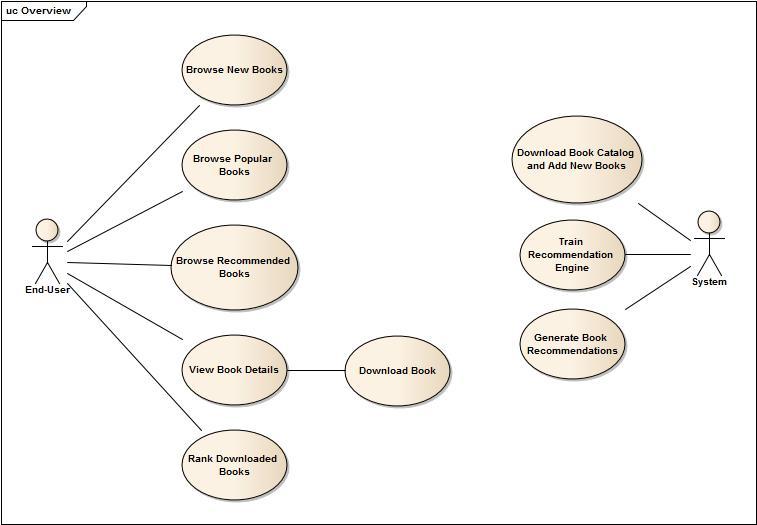
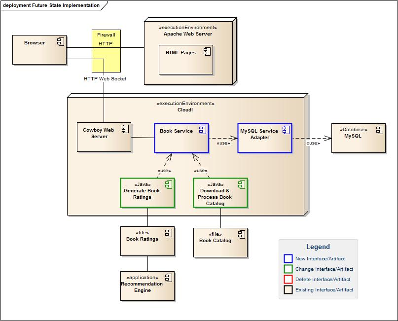
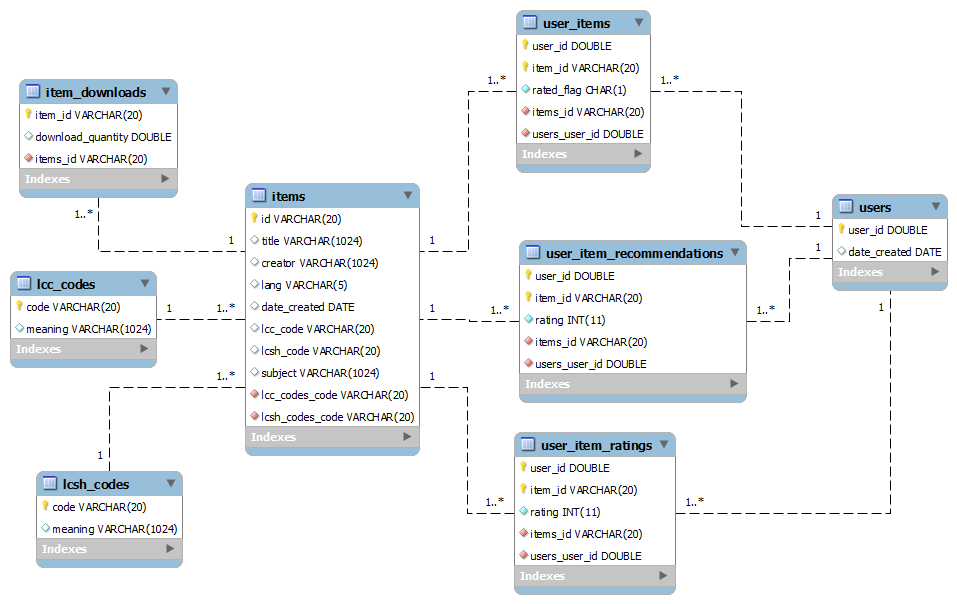

2. Book Recommendation Application¶
2.1. Background¶
The application used for this tutorial is a web-based book recommendation system that provides a list of books available on Project Gutenberg and provides recommendations of other books. You can run the application at http://cloudi.org/example/tutorial_book_service and view the full source code here
A use case diagram showing the major functions is listed below.
2.2. Current-State Implementation¶
A diagram of the current state implementation is shown below.

The primary components are:
- PHP is used to dynamically generate Web pages that are served by an Apache Web Server.
- A MySQL database is used to store the book catalog, user ratings, and recommendations.
- An open-source recommendation engine named LensKit is used to process each user’s book ratings and generate recommendations.
- Small Java programs are used to interact with the recommendation engine, and to download and process the book catalog.
The book catalog contains approximately 50,000 books.
2.3. Future-State Implementation¶
The existing system will be re-engineered to use a broker pattern where the various components are decoupled and potentially distributed. A diagram of the future-state implementation is shown below.
The primary changes are:
- Creation of a Book Service that will interact with the web pages using a RESTful API. This service will be executed by CloudI and will be created using the Erlang programming language.
- Use of a CloudI MySQL Service Adapter to provide flexibility for the MySQL database backend.
- HTML pages will call the Book Service directly using Websockets rather than being generated by PHP on the server side.
- Modify the various Java utility programs to run as CloudI services and use the MySQL Service Adapter rather than calling the MySQL database directly.
Note
The Future-State Implementation could be further simplified by using the Cowboy Web Server rather than the Apache Web Server for serving the HTML pages.
2.4. Architectural Decisions¶
2.4.1. Data Transmission¶
Because the components will be developed using different languages (Javascript, Java, and Erlang), an important decision is to select a language-independent method for transmitting data between each component. CloudI does not impose a specific data protocol, so you are free to select this. In this tutorial, the JSON protocol will be used with the following libraries:
Note
TODO: Fix Java JSON dependency.
- Java - TBD
- Erlang - jsx. Note that jsx is built into the CloudI distribution and is located in the module named cloudi_x_jsx
Note
CloudI Erlang dependencies have a cloudi_x_ prefix added to their modules to avoid version conflicts with any of your Erlang dependencies.
2.4.2. Service API¶
Another important point is to design a consistent RESTful API for interacting with your services. The tutorial uses the CloudI Service integration with the Cowboy HTTP Server to handle requests. The Cowboy HTTP Server supports the standard range of HTTP methods including: GET, HEAD, POST, PUT, PATCH, DELETE, and OPTIONS. . An excellent resource for designing RESTful API’s is located here
The table below lists the different use cases, HTTP methods, and URL examples implemented by the Book Service. Note that the top-level URL will be /book
| Use Case | Method | URL | Description |
|---|---|---|---|
| Browse New Books | GET | /recommend/book/newbooks | Return list of new books |
| Browse Popular Books | GET | /recommend/book/popularbooks | Return list of most-popular books |
| Browse Recommended Books | GET | /recommend/book/recommendedbooks?user=X | Return list of recommended books for the given User ID |
| View Book Details | GET | /recommend/book/allbooks?id=X | Return details about book given the Item ID |
| Download Book | GET | /recommend/book/download?id=X&user=Y | Download a book given the Item ID and User ID |
| Create New User | GET | /recommend/book/newuser | Create and return a new user ID |
| Get Unrated Books | GET | /recommend/book/unrated?user=X | Get the unrated books for a user ID |
| Rank Downloaded Book | GET | /recommend/book/rate?id=X&user=Y&rating=Z | Update a book’s rating given the User ID, Item ID, Rating |
| Add Book to Collection | POST | /recommend/book/ | Add a book to the collection |
Note
As described later in this tutorial, Access Control Lists (ACLs) are can be used as URL patterns. Consequently, give some thought to developing a hierarchical URL structure.
2.4.3. Integration Method¶
To benefit from CloudI features it is necessary to utilize CloudI services. To create a CloudI service it is necessary to use an implementation of the CloudI API. There are two types of CloudI services used for CloudI integration. An “external” CloudI service runs inside an operating system process external to the Erlang VM to keep memory isolated. CloudI API integration with C, C++, Java, JavaScript, Perl, PHP, Python, or Ruby creates an “external” CloudI service. An “internal” CloudI service runs inside the Erlang VM. CloudI API integration with Erlang or Elixir creates an “internal” CloudI service.
Additional information is available in the CloudI FAQ here .
For this service, HTTP REST calls will be used to integrate the HTML pages with the Book Service. The HTTP request/response messages will be delivered using the WebSocket protocol.
2.5. Data Model¶
A diagram showing the database tables and their interrelationships is shown below.
The primary tables are the items and users table. Several cross reference tables exist including:
- user_items - tracks which items a user has downloaded and if they have submitted a rating
- user_item_recommendations - contains recommendations for a particular user
- user_item_ratings - holds the rating value that a user submits for an item